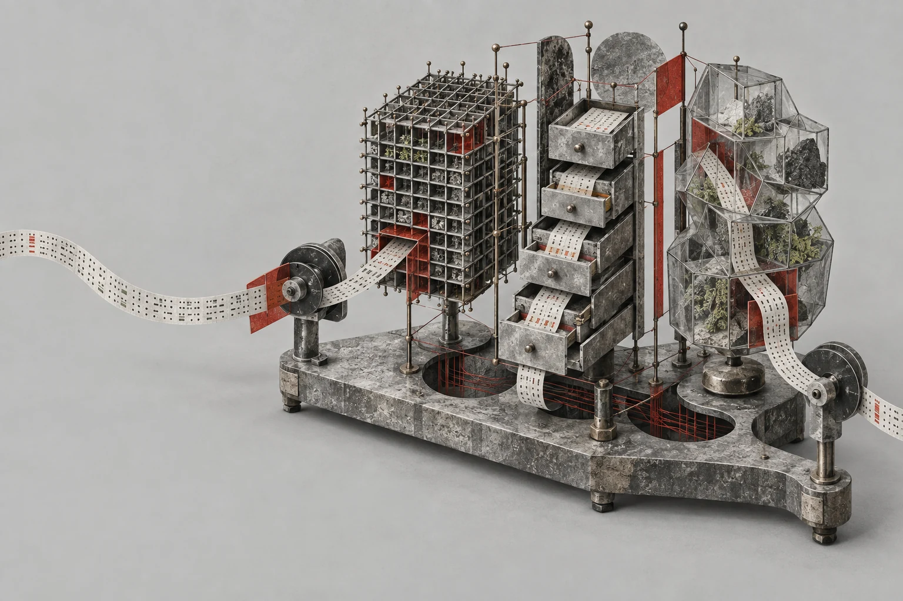

The database path
Databases
Start with the shared questions. Follow one database through them. Come back for the differences.

- 01
Understand the moving parts
What happens between a request and a result?
- 02
Store data and handle change
What is stored, and what makes a change safe?
- 03
Get a server running
Which process, which files, which instance?
- 04
Work with objects and access
Who can do what, and where does it apply?
- 05
See what the server is doing
What is slow, blocked or growing?
- 06
Back up, then restore
Can you get the right data back?
- 07
Keep more than one copy
Which copy can accept writes when something fails?
- 08
Protect it and change it safely
What has to remain true through the change?
Read a section, try it on your own host, and check what happened. Administration examples target the stated RHEL setup; use an isolated machine and keep the prerequisites in view.